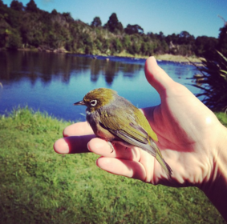

Tria in Philadelphia, PA: June 2015 - January 2016
Service staff responsible for beer and wine sales in a fine dining location
Wilderness Lodge in Lake Moeraki, New Zealand: November 2014 - April 2015
Lead bartender/wine steward, responsible for revising wine & beer menu, creating nightly suggested wine & beer pairings, and sales
Assisting with hiking, kayaking, and other wilderness tours
Wine Events at Grotto restaurant in Seoul, South Korea: February 2014 - September 2014
Creating and teaching wine tasting curriculum for English-speaking customers
Event planning and marketing geared towards English-speaking customers
Teacher at Bewegung School in Seoul, South Korea: October 2013 - October 2014
Teaching science, English, cooking, and other activities to students aged three through twelve. Creation of English curriculum and Native English Teachers' Manual.
Assistant Manager at Thorn Hill Vineyards in Lancaster, PA: December 2011 - May 2013
Coordinating with vineyard owners, restaurant partners, and employees to ensure a quality product and experience for our customers.
English Teacher at Nanjing Foreign Language School in Nanjing, China: September 2010 - September 2011
Teaching English as a second language to Chinese students.

New York Code & Design Academy in Philadelphia, PA: December 2015 - Current
Coding bootcamp focused on full stack web development.
Temple University in Philadelphia, PA: August 2006 - May 2010
3.45 GPA. Bachelors of Arts in Asian Studies with a minor in Japanese.
Temple University in Tokyo, Japan: January 2009 - May 2009
Study abroad.
Technical
HTML, CSS (including Bootstrap). Currently learning JavaScript and Ruby.
Verbal
Basic skills in Spanish, Mandarin Chinese, and intermediate skills in Japanese.
Photoshop, vim, terminal, git, Microsoft Office, social media outlets--and I even know how to use GIPHY on Slack!
Living in Tokyo and Seoul taught me so much about street style, then moving to New Zealand gave me such an appreciation for nature. Thanks to these respective homes, I'm in love with pastels and natural palettes. Currently I am looking for an intellectually challenging position that will help hone my eye for design as I continue studying web development.